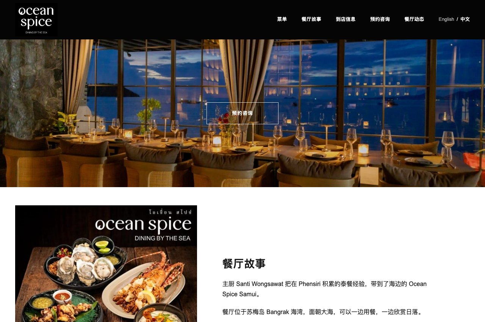
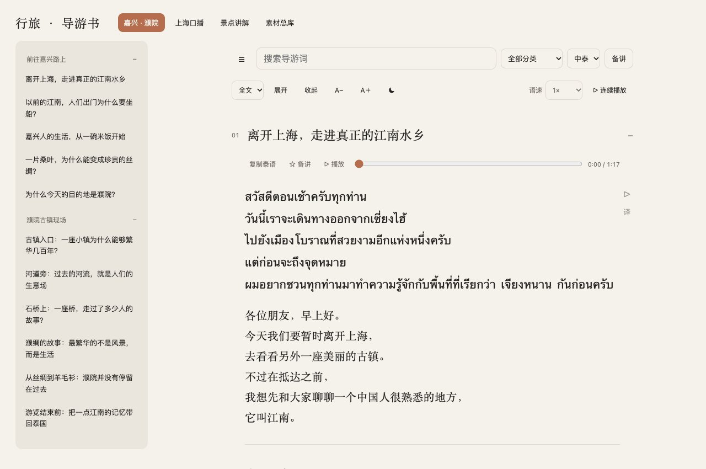
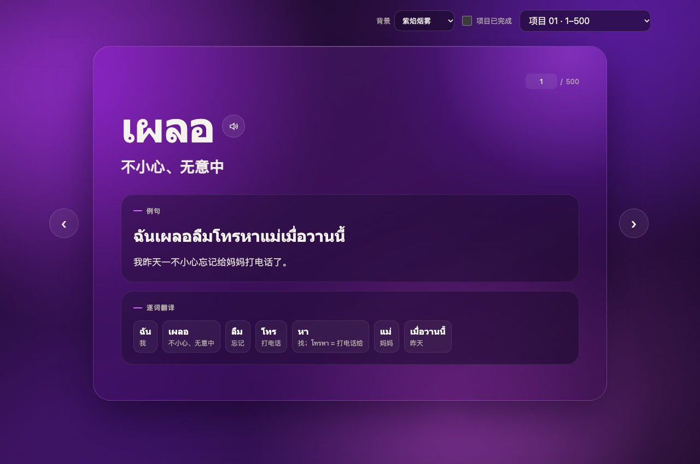

Ocean Spice
餐厅菜单与预约网站 · 客户项目，体验版待验收
- 需求
- 让中文客人看懂海外餐厅的菜品、做法与价格。
- 做了什么
- 对照 38 页英泰菜单，整理 85 道菜、95 个做法与价格选项；核对 มันกุ้ง，将中文译名定为「虾膏」。
- 交付
- 中英双语菜单、顾客预约页面与店员英文图解，供店方体验验收。
中泰语言服务与 AI 辅助开发

餐厅菜单与预约网站 · 客户项目，体验版待验收

中泰双语导游助手 · 个人作品，已上线

语言学习工具 · 个人作品，已上线